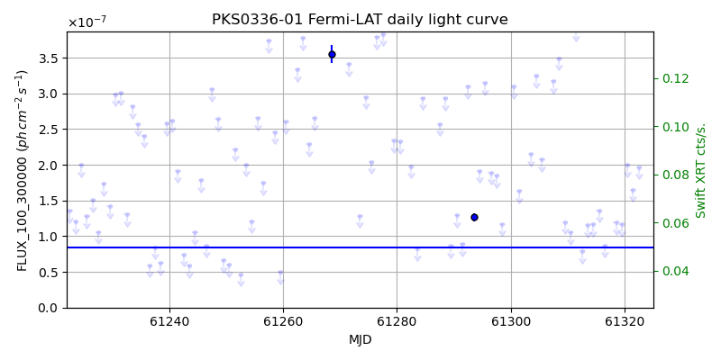
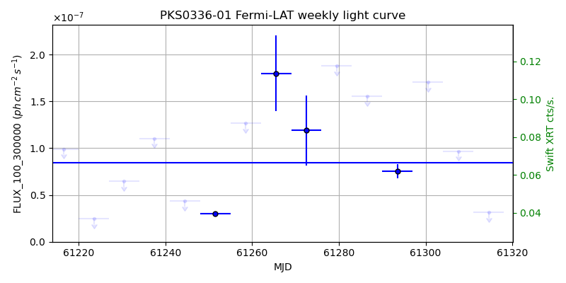
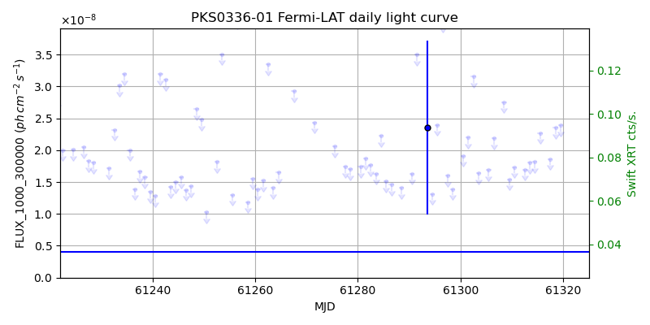
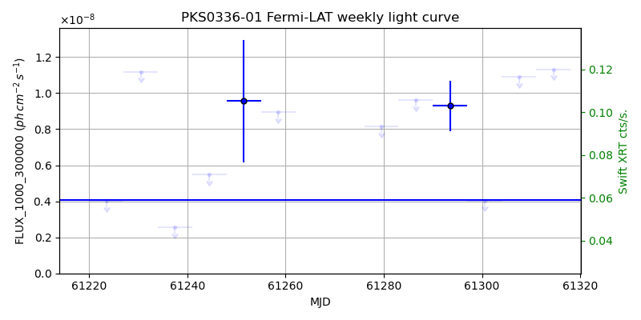

LAT Lightcurve site: https://fermi.gsfc.nasa.gov/ssc/data/access/lat/msl_lc/source/PKS_0336-01
Swift site: https://www.swift.psu.edu/monitoring/source.php?source=0336-019
NED: Query
Time of last update of this page: UT: 2026-10-10 15:14 (MJD: 61323.635)
| Property | Value |
|---|---|
| R.A. | 3:39:30.96 |
| Dec. | -1:46:37.2 |
| z | 0.852 |
| 3FGL SpectrumType | LogParabola |
| 3FGL PL Index | |
| 3FGL Flux_100_300000 | 8.42e-08 1 / (s cm2) |
| 3FGL Flux_1000_300000 | 4.08e-09 1 / (s cm2) |
| 3FGL Flux >200 GeV | 6.19e-13 1 / (s cm2) |
| 3FGL Extrap. Crab >200 GeV | 0.00 |
| 3FGL Flux After EBL Absorption >200GeV | 2.37e-14 1 / (s cm2) |
| 3FGL EBL Crab Fraction >200GeV | 0.00 |

| MJD | dMJD | Flux | dFlux | Frac3FGL | FracCrab>200GeV | EBLFracCrab>200GeV |
|---|---|---|---|---|---|---|
| 61318.50 | 0.50 | 1.19e-07 | 0.00e+00 | 0.00 | 0.00 | 0.00 |
| 61319.50 | 0.50 | 1.17e-07 | 0.00e+00 | 0.00 | 0.00 | 0.00 |
| 61320.50 | 0.50 | 2.00e-07 | 0.00e+00 | 0.00 | 0.00 | 0.00 |
| 61321.50 | 0.50 | 1.65e-07 | 0.00e+00 | 0.00 | 0.00 | 0.00 |
| 61322.50 | 0.50 | 1.97e-07 | 0.00e+00 | 0.00 | 0.00 | 0.00 |

| MJD | dMJD | Flux | dFlux | Frac3FGL | FracCrab>200GeV | EBLFracCrab>200GeV |
|---|---|---|---|---|---|---|
| 61286.50 | 3.50 | 1.55e-07 | 0.00e+00 | 0.00 | 0.00 | 0.00 |
| 61293.50 | 3.50 | 7.52e-08 | 7.48e-09 | 0.89 | 0.00 | 0.00 |
| 61300.50 | 3.50 | 1.71e-07 | 0.00e+00 | 0.00 | 0.00 | 0.00 |
| 61307.50 | 3.50 | 9.68e-08 | 0.00e+00 | 0.00 | 0.00 | 0.00 |
| 61314.50 | 3.50 | 3.14e-08 | 0.00e+00 | 0.00 | 0.00 | 0.00 |

| MJD | dMJD | Flux | dFlux | Frac3FGL | FracCrab>200GeV | EBLFracCrab>200GeV |
|---|---|---|---|---|---|---|
| 61318.50 | 0.50 | 2.35e-08 | 0.00e+00 | 0.00 | 0.00 | 0.00 |
| 61319.50 | 0.50 | 2.39e-08 | 0.00e+00 | 0.00 | 0.00 | 0.00 |
| 61320.50 | 0.50 | 7.10e-08 | 0.00e+00 | 0.00 | 0.00 | 0.00 |
| 61321.50 | 0.50 | 5.02e-08 | 0.00e+00 | 0.00 | 0.00 | 0.00 |
| 61322.50 | 0.50 | 4.28e-08 | 0.00e+00 | 0.00 | 0.00 | 0.00 |

| MJD | dMJD | Flux | dFlux | Frac3FGL | FracCrab>200GeV | EBLFracCrab>200GeV |
|---|---|---|---|---|---|---|
| 61286.50 | 3.50 | 9.61e-09 | 0.00e+00 | 0.00 | 0.00 | 0.00 |
| 61293.50 | 3.50 | 9.30e-09 | 1.40e-09 | 2.28 | 0.01 | 0.00 |
| 61300.50 | 3.50 | 4.04e-09 | 0.00e+00 | 0.00 | 0.00 | 0.00 |
| 61307.50 | 3.50 | 1.09e-08 | 0.00e+00 | 0.00 | 0.00 | 0.00 |
| 61314.50 | 3.50 | 1.13e-08 | 0.00e+00 | 0.00 | 0.00 | 0.00 |
--------------------------------------------------------- Using user-supplied coords: 3:39:30.96 -1:46:37.2 2000 --------------------------------------------------------- FLWO UT night of: 2026-10-11 Local Sid. @ Midnight: 00:55 Sunset (-15.0) (local, UT): 19:04 02:04 Sunrise (-15.0) (local, UT): 05:18 12:18 Moonrise (local, UT): Moonset (local, UT): Moon phase: 0.01 --------------------------------------------------------- AzTime LSID UT Obj_el Obj_az Mn_el Mn_az Sep. --------------------------------------------------------- 19:04 19:58 02:04 -22.4 77.5 -16.1 264.2 140.9 19:34 20:29 02:34 -16.1 81.8 -22.3 267.8 141.1 20:04 20:59 03:04 -9.8 85.9 -28.5 271.5 141.4 20:34 21:29 03:34 -2.1 89.9 -34.7 275.4 141.6 21:04 21:59 04:04 3.2 93.9 -40.8 279.7 141.9 21:34 22:29 04:34 9.5 97.9 -46.8 284.6 142.1 22:04 22:59 05:04 15.7 102.1 -52.7 290.5 142.4 22:34 23:29 05:34 21.9 106.6 -58.4 297.7 142.7 23:04 23:59 06:04 28.0 111.5 -63.6 307.3 142.9 23:34 00:29 06:34 33.8 117.0 -68.1 320.3 143.2 00:04 00:59 07:04 39.3 123.4 -71.3 338.2 143.5 00:34 01:29 07:34 44.4 130.8 -72.6 0.4 143.8 01:04 01:59 08:04 49.0 139.5 -71.5 22.7 144.0 01:34 02:30 08:34 52.7 149.9 -68.3 40.8 144.3 02:04 03:00 09:04 55.3 161.9 -63.9 54.1 144.5 02:34 03:30 09:34 56.6 175.1 -58.7 63.8 144.8 03:04 04:00 10:04 56.3 188.8 -53.1 71.2 145.0 03:34 04:30 10:34 54.6 201.7 -47.3 77.2 145.3 04:04 05:00 11:04 51.7 213.3 -41.4 82.2 145.5 04:34 05:30 11:34 47.7 223.1 -35.3 86.6 145.7 05:04 06:00 12:04 43.0 231.5 -29.2 90.6 145.9 05:18 06:14 12:18 40.7 234.8 -26.5 92.4 146.0 --------------------------------------------------------- Dark hours >55 deg.: 1.49 srcstart (UT): 2026-10-11 09:00 srcend (UT): 2026-10-11 10:29